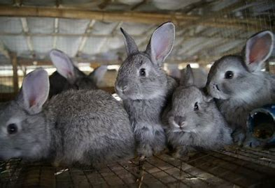
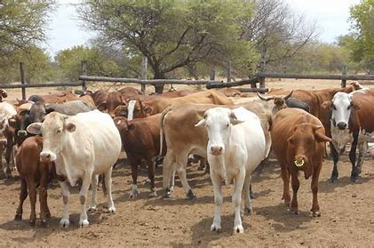
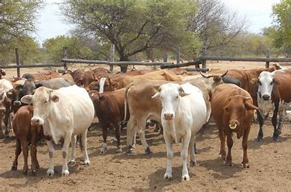
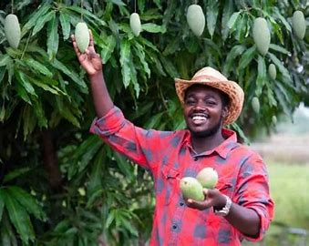

Discover the Best Farm Products:
Our farm is dedicated to providing the freshest and highest quality products to our customers
Explore our wide range of fresh and organic products.
Featured Products
"Welcome to Bashiru Farms, where the air is fresh, and the produce is even fresher! Our farm is dedicated to growing the highest-quality fruits, vegetables,Animals and herbs, all while using sustainable and eco-friendly practices. Come taste the difference for yourself and experience the best of nature's bounty!"
Farms
 

My Mango Farm
